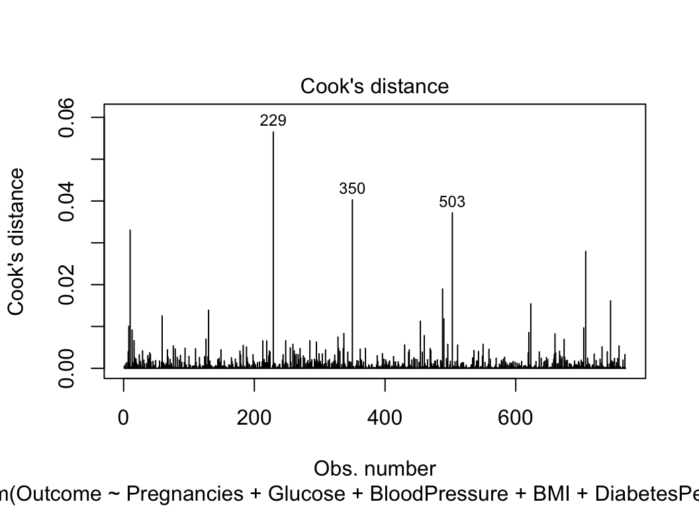

Statistical Analysis
Model Selection
Full Model
Since the outcome of diabetes was a binary variable in our dataset(1 = disease, 0 = no disease), we used the Logistic model to obtain the primary model which includes every diagnostic measurement in the model to explore the relationship between these measurements and diabetes. A logistic model models the probability of an event occurring by letting the log odds of the event be a linear combination of one or more independent variables. The analysis uses binary variable regression and models the probability of diabetes occurring with all the variables. Since the full model includes every measurement and does not perform statistical analysis and comparisons with other models to see its predictive ability, therefore it needs to be further analyzed and improved to get prediction optimization.
fullmodel <- glm(Outcome ~. ,data = diabetes)
summary(fullmodel)##
## Call:
## glm(formula = Outcome ~ ., data = diabetes)
##
## Deviance Residuals:
## Min 1Q Median 3Q Max
## -1.01348 -0.29513 -0.09541 0.32112 1.24160
##
## Coefficients:
## Estimate Std. Error t value Pr(>|t|)
## (Intercept) -0.8538943 0.0854850 -9.989 < 2e-16 ***
## Pregnancies 0.0205919 0.0051300 4.014 6.56e-05 ***
## Glucose 0.0059203 0.0005151 11.493 < 2e-16 ***
## BloodPressure -0.0023319 0.0008116 -2.873 0.00418 **
## SkinThickness 0.0001545 0.0011122 0.139 0.88954
## Insulin -0.0001805 0.0001498 -1.205 0.22857
## BMI 0.0132440 0.0020878 6.344 3.85e-10 ***
## DiabetesPedigreeFunction 0.1472374 0.0450539 3.268 0.00113 **
## Age 0.0026214 0.0015486 1.693 0.09092 .
## ---
## Signif. codes: 0 '***' 0.001 '**' 0.01 '*' 0.05 '.' 0.1 ' ' 1
##
## (Dispersion parameter for gaussian family taken to be 0.1601684)
##
## Null deviance: 174.48 on 767 degrees of freedom
## Residual deviance: 121.57 on 759 degrees of freedom
## AIC: 783.82
##
## Number of Fisher Scoring iterations: 2Full model test statistics
The full model result shows pregnancies, glucose, blood pressure, BMI and diabetes pedigree function are significantly related to diabetes odds, while skin thickness, insulin and age are not significantly related to diabetes odds. It has an AIC around 783. Due to the nonsignificant variables included in the model and high AIC, we need to adjust our model.
Stepwise regression
The first model was fitted using stepwise regression that is a
step-by-step iterative construction of a regression model involving the
selection of independent variables. It adds or removes potential
explanatory variables one by one and test s for statistical significance
after each iteration. The stepwise regression generates six predictors
of statistical significance including Pregnancies,
Glucose, BloodPressure, BMI, and
DiabetesPredigreeFunction, and Age. The final
model eliminatingSkinThickness and Insulin has
a smaller AIC.
stepmodel <- stepAIC(fullmodel,trace = F)
stepmodel$anova## Stepwise Model Path
## Analysis of Deviance Table
##
## Initial Model:
## Outcome ~ Pregnancies + Glucose + BloodPressure + SkinThickness +
## Insulin + BMI + DiabetesPedigreeFunction + Age
##
## Final Model:
## Outcome ~ Pregnancies + Glucose + BloodPressure + BMI + DiabetesPedigreeFunction +
## Age
##
##
## Step Df Deviance Resid. Df Resid. Dev AIC
## 1 759 121.5678 783.8218
## 2 - SkinThickness 1 0.00309149 760 121.5709 781.8413
## 3 - Insulin 1 0.25258410 761 121.8235 781.4353summary(stepmodel)##
## Call:
## glm(formula = Outcome ~ Pregnancies + Glucose + BloodPressure +
## BMI + DiabetesPedigreeFunction + Age, data = diabetes)
##
## Deviance Residuals:
## Min 1Q Median 3Q Max
## -1.10046 -0.29833 -0.09648 0.31272 1.23210
##
## Coefficients:
## Estimate Std. Error t value Pr(>|t|)
## (Intercept) -0.8362991 0.0843169 -9.919 < 2e-16 ***
## Pregnancies 0.0209264 0.0051218 4.086 4.86e-05 ***
## Glucose 0.0057091 0.0004832 11.815 < 2e-16 ***
## BloodPressure -0.0023572 0.0008018 -2.940 0.00338 **
## BMI 0.0130807 0.0019634 6.662 5.17e-11 ***
## DiabetesPedigreeFunction 0.1403017 0.0443929 3.160 0.00164 **
## Age 0.0027917 0.0015323 1.822 0.06886 .
## ---
## Signif. codes: 0 '***' 0.001 '**' 0.01 '*' 0.05 '.' 0.1 ' ' 1
##
## (Dispersion parameter for gaussian family taken to be 0.1600834)
##
## Null deviance: 174.48 on 767 degrees of freedom
## Residual deviance: 121.82 on 761 degrees of freedom
## AIC: 781.44
##
## Number of Fisher Scoring iterations: 2Best subset regression
While stepwise regression select variables sequentially, the best
subsets approach aims to find out the best fit model from all possible
subset models. Best subset regression selects the best model from all
possible subsets according to some goodness-of-fit criteria. The best
model it generated includes seven predictors: ’Pregnancies,
Glucose, BloodPressure, BMI, and
DiabetesPredigreeFunction, and Age, and
Insulin.
subsetmodel<-glm(Outcome ~ Pregnancies + Glucose + BloodPressure + BMI + DiabetesPedigreeFunction + Age+Insulin,data=diabetes)
summary(subsetmodel)##
## Call:
## glm(formula = Outcome ~ Pregnancies + Glucose + BloodPressure +
## BMI + DiabetesPedigreeFunction + Age + Insulin, data = diabetes)
##
## Deviance Residuals:
## Min 1Q Median 3Q Max
## -1.01707 -0.29614 -0.09656 0.32073 1.24183
##
## Coefficients:
## Estimate Std. Error t value Pr(>|t|)
## (Intercept) -0.8537906 0.0854265 -9.994 < 2e-16 ***
## Pregnancies 0.0205939 0.0051266 4.017 6.48e-05 ***
## Glucose 0.0059092 0.0005086 11.619 < 2e-16 ***
## BloodPressure -0.0023152 0.0008022 -2.886 0.00401 **
## BMI 0.0133382 0.0019733 6.759 2.76e-11 ***
## DiabetesPedigreeFunction 0.1478835 0.0447843 3.302 0.00100 **
## Age 0.0025991 0.0015393 1.688 0.09173 .
## Insulin -0.0001721 0.0001370 -1.257 0.20929
## ---
## Signif. codes: 0 '***' 0.001 '**' 0.01 '*' 0.05 '.' 0.1 ' ' 1
##
## (Dispersion parameter for gaussian family taken to be 0.1599617)
##
## Null deviance: 174.48 on 767 degrees of freedom
## Residual deviance: 121.57 on 760 degrees of freedom
## AIC: 781.84
##
## Number of Fisher Scoring iterations: 2Compare models
Cross validation
To compare across three models, we use a cross validation approach that splits the data into two sets: one set is used to train the model and the remaining set is used to test the model. We split so that 80% is used for training a regression model and 20% is used to evaluate the model performance.
The process works as follow:
- Build (train) the model on the training data set
- Apply the model to the test data set to predict the outcome of new unseen observations
- Quantify the prediction error as the mean squared difference between the observed and the predicted outcome values.
ALL criterions are similar, so we choose the simplest model.(stepmodel)
criterion <- c("AIC", "AUC", "RMSE", "MAE","Prediction Accuracy")
full_val <- c(783.82,0.7135,0.4249,0.3468,0.7451)
step_val <- c(781.44,0.7107,0.4249,0.3467,0.7451)
sub_val <- c(781.84,0.7135,0.4239,0.3461,0.7451)
variable_data <- data.frame(criterion,full_val,step_val,sub_val)
kable(variable_data,caption = "Table 1.Model Comparison", col.names = c("Criterion","Full Model","Stepwise model","Subset model"))%>% kable_styling(latex_option = c("hold_position"), position = "left")| Criterion | Full Model | Stepwise model | Subset model |
|---|---|---|---|
| AIC | 783.8200 | 781.4400 | 781.8400 |
| AUC | 0.7135 | 0.7107 | 0.7135 |
| RMSE | 0.4249 | 0.4249 | 0.4239 |
| MAE | 0.3468 | 0.3467 | 0.3461 |
| Prediction Accuracy | 0.7451 | 0.7451 | 0.7451 |
Root Mean Squared Error (RMSE):
As the name suggests it is the square root of the averaged squared difference between the actual value and the predicted value of the target variable. It gives the average prediction error made by the model, thus decreasing the RMSE value increases the accuracy of the mode.
Mean Absolute Error (MAE):
This metric gives the absolute difference between the actual values and the values predicted by the model for the target variable. If the value of the outliers does not have much to do with the accuracy of the model, then MAE can be used to evaluate the performance of the model. Its value must be less in order to make better models.
Akaike Information Criterion (AIC):
It assesses how well a model fits the data it generates.The calculation of the AIC relies on the number of independent variables used to build the model and the maximum likelihood estimate of the model. According to AIC, the best-fitting model is the one that explains the greatest amount of variation with the fewest independent variables, whichFewer variables will also enhance the optimization of the model to reduce error. Each redundant predictor added to the model will introduce a penalty.
Area under the ROC Curve (AUC):
An ROC curve is a graph showing the performance of a classification model at all classification thresholds. AUC measures the entire two-dimensional area underneath the entire ROC curve. The higher the AUC score, the better the classification of the predicted values is. For example, if we consider a model to predict and classify whether the outcome is ‘Diabetes’’ or ‘Normal’, a high AUC indicates that the model is capable of classifying ‘Diabetes” as ’Diabetes” and ‘Normal’ as ‘Normal’ more efficiently. There are two reasons why we compare AUC. On one hand, AUC is scale-invariant. It measures the ranking of predictions rather than their absolute values. On the other hand, AUC measures the quality of the model’s predictions irrespective of what classification threshold is chosen. Full model and subset model’s AUC is slightly higher than the stepwise model but not with significant statistical value.
Prediction accuracy:
Prediction accuracy was calculated by predicting the testing data using the model fitted from the training data. If the predicted value is less than 0.5, we classified it as 0. If the predicted value is larger than 0.5, we classified it as 1. Then we computed the ratio of predicted value from the test data to the observed value of testing data to see how much percentage of the predicted value matched to the observed value and recorded it as prediction accuracy.
From the comparison table, we see that it returns similar values among RMSE of 0.42, MAE of 0.35, prediction accuracy of 0.74. Stepwise regression’s AIC and AUC is slightly lower than the full model’s and subset model’s respectively but the difference is not statistically significant.
Therefore, we select the stepwise regression model with the fewest predictors following the principle of parsimony.
Why use AIC instead of BIC?
The reason we use AIC is because Bayesian information criterion (BIC) usually results in more parsimonious model than the Akaike information criterion.
Model interpretation
variable_name <- c("Pregnancies", "Glucose", "Blood Pressure", "BMI", "Diabetes Pedigree Function","Age")
val <- c(1.021,1.006,0.998,1.013,1.151,1.003)
p <- c("< 0.05","< 0.05","< 0.05","< 0.05","< 0.05",0.069)
variable_data <- data.frame(variable_name,val,p)
kable(variable_data,caption = "Table 2.Parameter estimates for the logistic model", col.names = c("Parameters","Exponentiated Coefficients/Odds Ratio","P-values"))%>% kable_styling(latex_option = c("hold_position"), position = "left")| Parameters | Exponentiated Coefficients/Odds Ratio | P-values |
|---|---|---|
| Pregnancies | 1.021 | < 0.05 |
| Glucose | 1.006 | < 0.05 |
| Blood Pressure | 0.998 | < 0.05 |
| BMI | 1.013 | < 0.05 |
| Diabetes Pedigree Function | 1.151 | < 0.05 |
| Age | 1.003 | 0.069 |
The final best model generated is as following: \[Outcome = 1.021(Pregnancies)+1.006(Glucose)+0.998(BloodPressure)+1.013(BMI)+1.151(DiabetesPedigreeFunction)+1.003(Age)\]
Assumptions Check
Assumption 1— Appropriate Outcome Type
Our goal is to establish a model to predict the occurrence of diabetes where the outcome is “Diabetes” or “Normal”. By default, logistic regression assumes that the outcome variable is binary, meeting our criteria.
Assumption 2 — Linearity of independent variables and log-odds
crPlots(stepmodel)
We can check logit linearity by visually inspecting the scatter plot between each predictor and the logit values.
Component residual plot is an extension of partial residual plots, which is desirable to check whether predictors have a linear relationship with dependent variables. A partial residual plot essentially attempts to model the residuals of one predictor against the dependent variable. A component residual plot adds a line indicating where the line of best fit lies. A significant difference between the residual line and the component line indicates that the predictor does not have a linear relationship with the dependent variable.
The blue line shows the expected residuals if the relationship between the predictor and response variable was linear. The pink line shows the actual residuals. If the blue line and pink line basically overlaps, we can conclude that there is a linear relationship between the outcome and predictor.
From component residual plots of each variable, we see that all predictors except glucose display a prominent linear relationship with outcome. Tails of the pink line in the glucose graph deviated a little from the blue line but we can still conclude it linearwise.
Assumption 3— No strongly influential outliers
Influential values are extreme individual data points that can alter the quality of the logistic regression model. We used Cook’s Distance to determine the influence of a data point. Cook’s difference is calculated based on residual and leverage of each data point. It summarizes the changes in the regression model when that particular (ith ) observation is removed.
The most extreme values in the data can be examined by visualizing the Cook’s distance values. Here we label the top 3 largest values: Note that not all outliers are influential observations. To check whether the data contains potential outliers, the standardized residual error can be inspected. Data points with absolute standardized residuals above 3 represent possible outliers and may deserve closer attention to determine its influence.
plot(stepmodel, which = 4, id.n = 3)
Assumption 4 — Absence of Multicollinearity
Multicollinearity corresponds to a situation where the data contain highly correlated independent variables. With highly correlated variables, the standard error will be inflated and R-square value will falsely increase. This is a problem because it reduces the precision of the estimated coefficients, which weakens the statistical power of the logistic regression model.
Variance Inflation Factor (VIF) measures the degree of multicollinearity in a set of independent variables. Mathematically, it is equal to the ratio of the overall model variance to the variance of a model that includes only that single independent variable.VIF>5 indicates a cause for concern of multicollinearity while VIF > 10 indicates a serious collinearity problem in the model.
In our model, all predictors have VIF between 1 and 1.6, which is closer to the smallest possible for VIF of 1. Our model is free form collinearity.
all_vifs <- car::vif(stepmodel)print(all_vifs) %>% tidy()%>%
mutate(Variables = names,
VIF = x) %>%
dplyr::select(Variables,VIF)%>%
knitr::kable(digits = 3,caption = "Table 3.VIF of all variables")%>%
kable_styling(latex_option = c("hold_position"), position = "left")## Pregnancies Glucose BloodPressure
## 1.427047 1.143559 1.154015
## BMI DiabetesPedigreeFunction Age
## 1.148072 1.036558 1.555786| Variables | VIF |
|---|---|
| Pregnancies | 1.427 |
| Glucose | 1.144 |
| BloodPressure | 1.154 |
| BMI | 1.148 |
| DiabetesPedigreeFunction | 1.037 |
| Age | 1.556 |
Assumption 5— Independence of observations
In logistic regression, it assumes that observations are independent of each other, i.e., they should not come from repeated or paired data. This means that each observation is not influenced by or related to the rest of the observations.
This independence assumption is automatically met for our dataset since the data consists of individual records.
We can also check this assumption by creating a Residual Series plot which plots the deviance residuals of the logit model against the index numbers of the observations. Since the residuals in the plot above appear to be randomly scattered around the centerline of zero, we can infer visually that the assumption is satisfied.
model.data <- augment(stepmodel) %>%
mutate(index = 1:n())
ggplot(model.data, aes(index, .std.resid)) +
geom_point(aes(color = factor(Outcome)), alpha = .5) +
theme_bw()+
labs(title="Residual Series Plot",y="Deviance Residuals",color="Outcome")+
theme(plot.title = element_text(color = "darkgrey",size = 13))+
scale_color_manual(labels=c("Normal","Diabetes"),values=c("blue","red"))Assumption 6 — Sufficiently large sample size
There should be an adequate number of observations for each independent variable in the dataset to avoid creating an overfit model.
A common way to determine a large sample size is that the total number of observations should be greater than 500. Our data set contains 768 observations, which is sufficiently large.